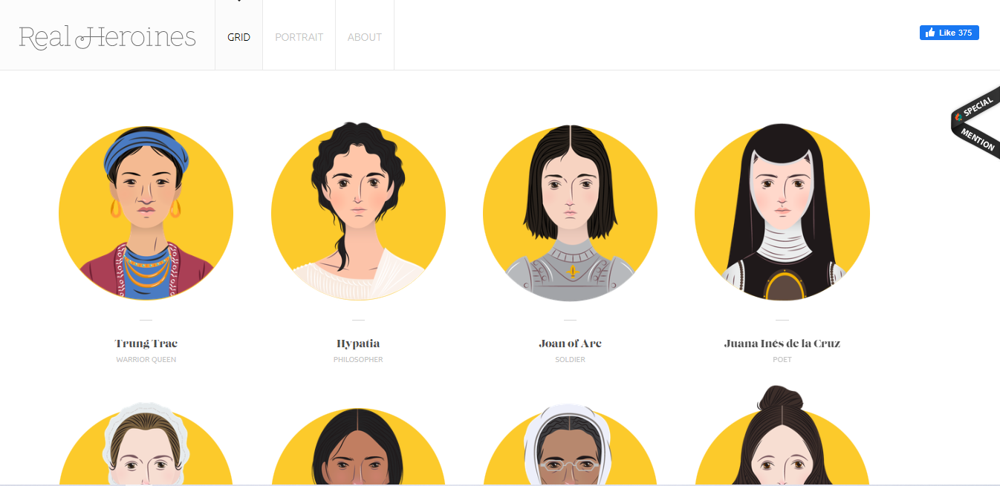
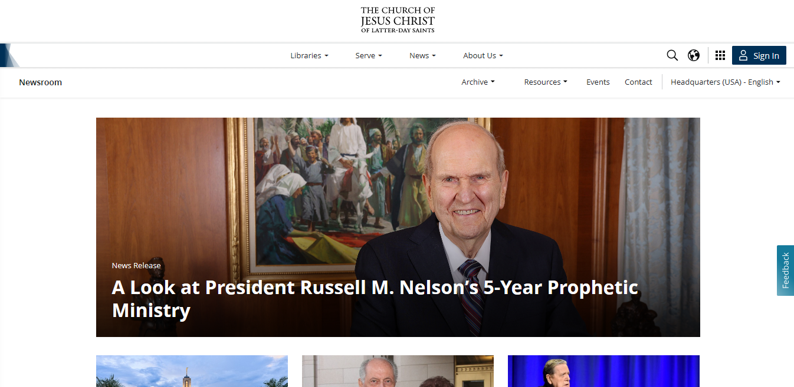
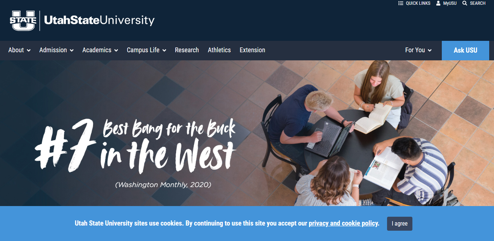

White Space and Clean Design
Real Heroines
realheroines.com This website makes good use of white space and clean design principles. They keep their design simple and use negative space throughout their website, making it easy to read. This also makes it very easy to find information and does not distract.
Hick's Law
Church Newsroom
Church Newsroom I choose this church Newsroom website because I believe they do an excellent job of categorizing data to assist audiences in handling the site. The website is not overly cluttered, with only a few articles and links to other pages.
Visual Hierarchy
Utah State University
Utah University This University website uses visual hierarchy very effectively. They accomplish this through the use of well-placed and sized text and eye-catching images. They also keep the page simple in order to direct the eye to the most important parts.